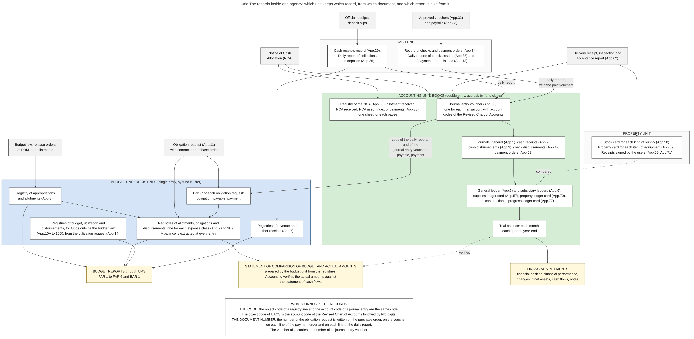

Diagram 08a · Mermaid flowchart
The records inside one agency: which unit keeps which record, from which document, and which report is built from it
Question: Inside one national agency, which unit keeps which record, from which document it is written, which unit passes its record to which other unit, and from which records are the reports built?

What the diagram shows
- Question: inside one national agency, which unit keeps which record, from which document it is written, which unit passes its record to which other unit, and from which records are the reports built?
- Idea: four units of one agency write about the same money. The BUDGET UNIT keeps registries: lists with running balances that follow legal authority (appropriation, allotment, obligation, disbursement). The ACCOUNTING UNIT keeps the books: double entry on the accrual basis (assets, liabilities, revenue, expenses). The CASH UNIT keeps the records of receipts, checks and payment orders, and it reports to accounting every day. The PROPERTY UNIT keeps the cards of the items in stock and in use. The budget reports come from the registries. The financial statements come from the books. One statement, the comparison of budget and actual amounts, needs both.
- How to read it: top row (grey) = source documents. Blue frame = budget unit. Green frame = accounting unit. White frames = cash unit and property unit. Yellow = reports. A solid arrow = this document or record is the source of the next record. A dotted arrow = the two records are compared with each other.
- Numbers in brackets: "App." is the number of the form in Volume II of the Manual [GAM-V2].
- Sources: the list of journals, ledgers and registries [GAM-V1 Ch.2 s.12]. Registries of the budget unit and the rule that a balance is extracted at every entry [GAM-V1 Ch.3 ss.5-12]. Part C of the obligation request as the subsidiary record of one obligation [GAM-V1 Ch.3 s.12][GAM-V2 App.11]. The budget unit posts payments from the reports that accounting sends [GAM-V1 Ch.3 ss.16-17]. Registry of the NCA and index of payments [GAM-V1 Ch.6 s.12][GAM-V2 App.30, App.38]. Daily reports of the cash unit [GAM-V1 Ch.5 s.39, Ch.6 s.52, s.56]. Documents that are posted to the journals [GAM-V1 Ch.19 s.59]. Ledger cards of accounting and cards of the property unit, and their reconciliation [GAM-V1 Ch.8 s.9, Ch.10 s.42]. The six statements [GAM-V1 Ch.2 s.11]. The statement of comparison is prepared by the budget unit and verified by accounting [GAM-V1 Ch.3 ss.25-30]. The present set of budget reports and their route through URS [JC2019-1].
- Limit: the diagram shows the records that the Manual of 2015 prescribes. It does not show how many agencies keep them on paper, in a spreadsheet or in a system (chapter 16).
Code

---
title: "08a The records inside one agency: which unit keeps which record, from which document, and which report is built from it"
config:
flowchart:
wrappingWidth: 900
---
flowchart TB
%% QUESTION THIS DIAGRAM ANSWERS: inside one national agency, which unit keeps which record, from which document it is written, which unit passes its record to which other unit, and from which records are the reports built?
%% IDEA: four units of one agency write about the same money. The BUDGET UNIT keeps registries: lists with running balances that follow legal authority (appropriation, allotment, obligation, disbursement). The ACCOUNTING UNIT keeps the books: double entry on the accrual basis (assets, liabilities, revenue, expenses). The CASH UNIT keeps the records of receipts, checks and payment orders, and it reports to accounting every day. The PROPERTY UNIT keeps the cards of the items in stock and in use. The budget reports come from the registries. The financial statements come from the books. One statement, the comparison of budget and actual amounts, needs both.
%% READING: top row (grey) = source documents. Blue frame = budget unit. Green frame = accounting unit. White frames = cash unit and property unit. Yellow = reports. A solid arrow = this document or record is the source of the next record. A dotted arrow = the two records are compared with each other.
%% NUMBERS IN BRACKETS: "App." is the number of the form in Volume II of the Manual [GAM-V2].
%% SOURCES: the list of journals, ledgers and registries [GAM-V1 Ch.2 s.12]. Registries of the budget unit and the rule that a balance is extracted at every entry [GAM-V1 Ch.3 ss.5-12]. Part C of the obligation request as the subsidiary record of one obligation [GAM-V1 Ch.3 s.12][GAM-V2 App.11]. The budget unit posts payments from the reports that accounting sends [GAM-V1 Ch.3 ss.16-17]. Registry of the NCA and index of payments [GAM-V1 Ch.6 s.12][GAM-V2 App.30, App.38]. Daily reports of the cash unit [GAM-V1 Ch.5 s.39, Ch.6 s.52, s.56]. Documents that are posted to the journals [GAM-V1 Ch.19 s.59]. Ledger cards of accounting and cards of the property unit, and their reconciliation [GAM-V1 Ch.8 s.9, Ch.10 s.42]. The six statements [GAM-V1 Ch.2 s.11]. The statement of comparison is prepared by the budget unit and verified by accounting [GAM-V1 Ch.3 ss.25-30]. The present set of budget reports and their route through URS [JC2019-1].
%% LIMIT: the diagram shows the records that the Manual of 2015 prescribes. It does not show how many agencies keep them on paper, in a spreadsheet or in a system (chapter 16).
S1["Budget law, release orders<br/>of DBM, sub-allotments"]:::src
S2["Obligation request (App.11)<br/>with contract or purchase order"]:::src
S3["Notice of Cash<br/>Allocation (NCA)"]:::src
S4["Delivery receipt, inspection and<br/>acceptance report (App.62)"]:::src
S5["Approved vouchers (App.32)<br/>and payrolls (App.33)"]:::src
S6["Official receipts,<br/>deposit slips"]:::src
subgraph BUD["BUDGET UNIT: REGISTRIES (single entry, by fund cluster)"]
R1["Registry of appropriations<br/>and allotments (App.8)"]
R2["Registries of allotments, obligations and<br/>disbursements, one for each expense class (App.9A to 9D).<br/>A balance is extracted at every entry"]
R2C["Part C of each obligation request:<br/>obligation, payable, payment"]
R3["Registries of budget, utilization and<br/>disbursements, for funds outside the budget law<br/>(App.10A to 10D), from the utilization request (App.14)"]
R4["Registries of revenue and<br/>other receipts (App.7)"]
end
subgraph CASH["CASH UNIT"]
C1["Cash receipts record (App.29).<br/>Daily report of collections<br/>and deposits (App.26)"]
C2["Record of checks and payment orders (App.34).<br/>Daily reports of checks issued (App.35) and<br/>of payment orders issued (App.13)"]
end
subgraph PROP["PROPERTY UNIT"]
P1["Stock card for each kind of supply (App.58).<br/>Property card for each item of equipment (App.69).<br/>Receipts signed by the users (App.59, App.71)"]
end
subgraph ACC["ACCOUNTING UNIT: BOOKS (double entry, accrual, by fund cluster)"]
JR["Registry of the NCA (App.30): allotment received,<br/>NCA received, NCA used. Index of payments (App.38):<br/>one sheet for each payee"]
J0["Journal entry voucher (App.36):<br/>one for each transaction, with account<br/>codes of the Revised Chart of Accounts"]
J1["Journals: general (App.1), cash receipts (App.2),<br/>cash disbursements (App.3), check disbursements (App.4),<br/>payment orders (App.52)"]
J2["General ledger (App.5) and subsidiary ledgers (App.6):<br/>supplies ledger card (App.57), property ledger card (App.70),<br/>construction in progress ledger card (App.77)"]
J3["Trial balance: each month,<br/>each quarter, year-end"]
end
O1["BUDGET REPORTS through URS<br/>FAR 1 to FAR 6 and BAR 1"]:::out
O3["STATEMENT OF COMPARISON OF BUDGET AND ACTUAL AMOUNTS<br/>prepared by the budget unit from the registries.<br/>Accounting verifies the actual amounts against<br/>the statement of cash flows"]:::out
O2["FINANCIAL STATEMENTS<br/>financial position, financial performance,<br/>changes in net assets, cash flows, notes"]:::out
S1 --> R1 --> R2
S2 --> R2
S2 --> R2C
S3 --> JR
S3 --> J0
S4 --> P1
S4 --> J0
S5 --> C2
S6 --> C1
C1 -- "daily report" --> J0
C2 -- "daily reports,<br/>with the paid vouchers" --> J0
C1 --> R4
J0 -- "copy of the daily reports and of the<br/>journal entry voucher: payable, payment" --> R2C
R2C --> R2
J0 --> J1 --> J2 --> J3
P1 -. "compared" .- J2
R1 --> O1
R2 --> O1
R3 --> O1
R4 --> O1
R2 --> O3
J3 -. "verifies" .-> O3
J3 --> O2
NOTE["WHAT CONNECTS THE RECORDS<br/>THE CODE: the object code of a registry line and the account code of a journal entry are the same code.<br/>The object code of UACS is the account code of the Revised Chart of Accounts followed by two digits.<br/>THE DOCUMENT NUMBER: the number of the obligation request is written on the purchase order, on the voucher,<br/>on each line of the payment order and on each line of the daily report.<br/>The voucher also carries the number of its journal entry voucher."]
O1 ~~~ NOTE
O2 ~~~ NOTE
classDef default fill:#ffffff,stroke:#444444,color:#111
classDef src fill:#f2f2f2,stroke:#555555,color:#111
classDef out fill:#fff8dc,stroke:#8a6d00,color:#111
style BUD fill:#d6e4f7,stroke:#1f4e8c
style ACC fill:#d5ecd5,stroke:#2e6b2e
style CASH fill:#fafafa,stroke:#555555
style PROP fill:#fafafa,stroke:#555555